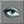

UDN
Search public documentation:
UnrealVertexAnimationKR
English Translation
日本語訳
中国翻译
Interested in the Unreal Engine?
Visit the Unreal Technology site.
Looking for jobs and company info?
Check out the Epic games site.
Questions about support via UDN?
Contact the UDN Staff
日本語訳
中国翻译
Interested in the Unreal Engine?
Visit the Unreal Technology site.
Looking for jobs and company info?
Check out the Epic games site.
Questions about support via UDN?
Contact the UDN Staff
정점 애니메이션 내보내기 및 가져오기
정점 애니메이션 파이프라인에는 메쉬를 엔진으로 들여오기 위한 약간의 간단한 프로그래밍이 요구됩니다. 이 애니메이션은 뼈대 애니메이션과 마찬가지로 Animation 브라우저에 나타나지 않습니다. 이러한 이유에서, 이 튜토리얼은 아티스트가 아니라 프로그래머들을 대상으로 합니다.언제 정점 애니메이션을 사용할 것인가?
정점 메쉬는 정적 메쉬 및 뼈대 메쉬와 현저하게 다릅니다. 복습을 위해, 이 세 가지의 다른 점을 간단히 점검해 보겠습니다.- 정적 메쉬: 작성 및 구현, 양 측면에서 세 가지중 가장 단순합니다. 이 메쉬들은 어떤 식으로도 변형할 수 없습니다.
- 뼈대 메쉬: 이 메쉬들은 보이지 않는 기초적 뼈의 지지 구조에 연결되어 있습니다. 뼈가 움직임에 따라 가중된 정점도 움직입니다. 미묘한 이행이나 새 애니메이션을 용이하게 하기 위해 같은 메쉬에 여러 개의 애니메이션을 블렌드할 수 있습니다.
- 정점 메쉬: 정점 면에서 가장 융통성이 있습니다. 수시로 개별 정점들의 위치를 조작함으로써 무거운 메쉬의 변형 또는 미묘한 제어를 가능하게 합니다. Blending 애니메이션을 블렌드하는 것은 가능하지 않으며, 오직 하나의 시퀀스만 활성화할 수 있습니다 .
내보내기
정점 애니메이션 및 메쉬를 내보내기 하려면 Maya 또는 3DS Max 에서 ActorX 를 여십시오. 다음의 옵션들을 필요에 따라 설정하십시오. 나머지 옵션들은 정점 애니메이션과 상관이 없습니다.Output Folder (출력 폴더)
출력 폴더에 대해서는 "Models" 또는 이와 비슷한, 모델이 들어갈 코드 패키지의 하위 디렉토리를 지정해야 합니다. 예를 들어 이 모델을 "Guns" 패키지 내에서 사용하고 싶다면, 이것을 .../< YourGame >/Guns/Models 에 저장해야 합니다.Animation File Name (애니메이션 파일 이름)
이 필드를 애니메이션의 이름으로 채우십시오. 이것은 메쉬 파일의 이름도 됩니다만, 나중에 변경할 수 있습니다.Frame Range (프레임 범위)
이 필드에는 내보내기 하고자 하는 프레임의 범위를 기입합니다. 예를 들어 "0-10" 은 프레임 0 에서 프레임 10 까지를 내보내기 합니다. ActorX 의 Vertex Animation 섹션에 있지 않은 비슷한 필드 "animation range (애니메이션 범위)"는 무시되며 정점 애니메이션에 대해 사용되어서는 안됩니다.Append to Existing (기존의 것에 덧붙이기)
한 모델에 대해 여러 개의 애니메이션을 내보내기 하고 싶다면, 먼저 한 개의 애니메이션을 내보내기 한 다음,추가 애니메이션 각각에 대해 이 박스를 체크하십시오. 애니메이션 데이터가 이전 애니메이션의 뒤에 덧붙여질 것입니다. 스크립트 파일을 설정할 때, 전체 애니메이션 파일을 별도의 애니메이션으로 분리할 것입니다. 옵션들이 모두 설정되면 ActorX 의 Vertex Animation 섹션에서 "Export" 버튼을 클릭하십시오. 이 버튼의 클릭은 "Output Folder" 필드에서 지정한 폴더에 <AnimationName>_a.3d 와 <AnimationName>_d.3d 라는, 두 개의 파일을 만듭니다. _d 파일은 사실상 메쉬이며, _a 파일에는 애니메이션 정보가 들어 있습니다.Maya 에 관한 노트
내보내기를 위한 Maya 의 ActorX 인터페이스는 3DS Max 의 그것보다 약간 더 원시적입니다. 이것은 'axvertex' 명령으로 소환됩니다. 주 내보내기 윈도우 ('axmain') 를 사용하여 출력 경로와 애니메이션 파일 이름을 지정해야 할 것입니다. 또한 익스포터는 초보적인 계층 형성을 위하여, 장면에 애니메이트 하는 메쉬와 연결된 Maya 관절이 최소한 한 개는 있을 것을 요구합니다.가져오기
#exec 명령들
정점 애니메이션을 가져오기 하려면 스크립트 파일에 일련의 "#exec" 명령들을 추가해야 합니다. 이 스크립트가 들어 있는 패키지가 컴파일 되었을 때, 이 명령들이 애니메이션 데이터가 .u 파일 내로 가져오기 되도록 합니다.MESH IMPORT
스크립트 파일을 만들고 다음과 같은 #exec 명령을 사용하여 모델을 가져오기 합니다. #exec MESH IMPORT MESH=<SomeNameForYourMesh> ANIVFILE=..\<PackageName>\Models\<_A.3d Model File> DATAFILE=..\<PackageName>\Models\<_D.3d Model File> X=<OffsetX> Y=<OffsetY> Z=<OffsetZ>MESH ORIGIN
다음에는 이 #exec 명령을 사용하여 메쉬에 대한 기본 원점 및 회전을 지정해야 합니다 : #exec MESH ORIGIN MESH=<SomeMeshName> X=<OriginX> Y=<OriginY> Z=<OriginZ> ROLL=<RollOffset> PITCH=<PitchOffset> YAW=<YawOffset> 매개변수 ROLL, PITCH 그리고 YAW 는 -256 - 256. -64 의 범위로 지정됩니다. 예를 들어 시계 반대 방향으로 90 도 회전합니다. X,Y,그리고 Z 는 Unreal 유닛으로 표시됩니다.MESH SEQUENCE
여러분이 들여오기 하는 각 애니메이션에 대해, 애니메이션 파일 내의 어느 프레임이 나중에 재생할 수 있는 애니메이션에 해당되는지 지정해야 합니다. 원한다면 여러 개의애니메이션이 같은 프레임을 사용하도록 할 수 있습니다. 일반적으로 한 애니메이션이 파일 내의 모든 프레임이 되도록 정의하는 것이 도움이 됩니다.다음은 그러한 애니메이션을 작성하는 방법입니다: #exec MESH SEQUENCE MESH=<SomeNameForYourMesh> SEQ=All STARTFRAME=0 NUMFRAMES=XXX 매개변수 MESH 의 값이 위의 가져오기 exec 에 있는 것과 같도록 하십시오. SEQ 는 애니메이션에 대한 이름입니다. 각 애니메이션에 대해 이 행들을 따로 작성해야 합니다. 애니메이션에 대한 프레임의 수 또는 시작 프레임을 확실히 모를 경우에는, 모두 가져오기 하십시오. UnrealEd 를 열고 애니메이션을 “모두” 보십시오. 다음 섹션에서 메쉬를 보는 방법에 대해 좀 더 설명하겠습니다.TEXTURE IMPORT
그 다음에는 텍스처를 .u 파일 내로 가져오기 하여 메쉬에 할당되도록 해야 합니다. 이 부분은 다음의 exec 명령이 처리합니다: #exec TEXTURE IMPORT NAME=<TextureName> FILE==..\<PackageName>\Models\<TextureFileName> GROUP=<SomeGroup> 이 명령은 텍스처를 .u 파일 내에 넣어 UnrealEd 의 텍스처 브라우저나 다른 #exec 명령, 또는 스크립트 자체 내에서 볼 수 있도록 합니다. 메쉬에 여러 개의 텍스처가 배정되어 있다면 이것을 여러 번 호출해야 할 것입니다.MESHMAP SETTEXTURE
끝으로, 각 텍스처를 메쉬에 배정해야 합니다. 이 exce 명령이 그 작업을 해줍니다: #exec MESHMAP SETTEXTURE MESHMAP=<SomeNameForYourMesh> NUM=<MaterialID> TEXTURE=<TextureName> 메쉬에 의해 사용되는 각 소재 ID 에 대해 이 행이 필요합니다.DefaultProperties (기본 속성들)
스크립트 파일의 기본 속성에서, 가져오기 한 메쉬를 스크립트에서 설명한 액터에 배정해야 합니다. 이를 위해서는 다음 행을 스크립트 파일의 defaultproperties 섹션에 넣으십시오. <verbatim> Mesh=Mesh'ThisPackage.MeshName' </verbatim>.u 파일 작성
스크립트 파일을 저장하고 패키지를 보통대로 컴파일 하십시오. 컴파일러가 메쉬를 들여오기 하는 것을 확인하게 될 것입니다.Unrealed 에서 보기
들여오기한 메쉬를 UnrealEd 에서 보려면 Mesh Browser 버튼을
클릭하여 Mesh 브라우저를 엽니다.